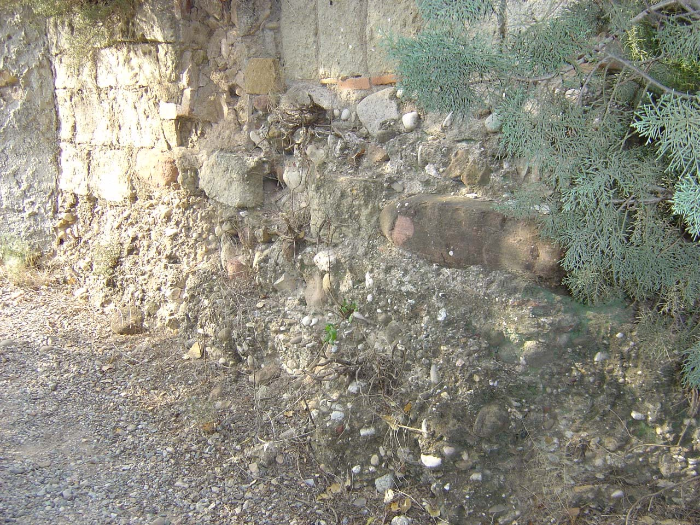
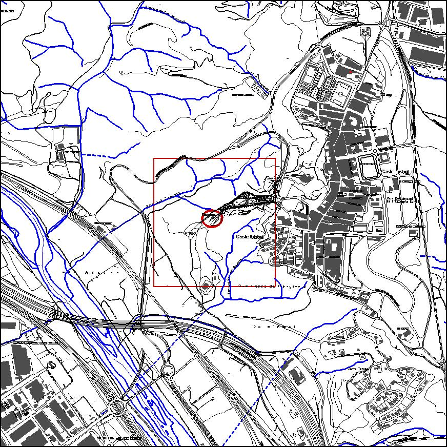

|  |  |
Nom de l’element: Castell de Castellbisbal
Clau d’identificació: D.06
Nucli o indret: a l’Ermita de Sant Vicenç del Castell
UTM: X= 414.421, Y= 4.592.091
Règim del sòl: sòl no urbanitzable.
1.1. Època de construcció i tipologia:
El Bisbe d’Egara va ordenar la seva construcció l’any 400 i a l’entorn el castell es va anar format la vila de Castellbisbal. Els prelats el tenien per mansió de repòs i era conegut pel nom “Castri Episcopali siti en Lupricato”. Durant les revoltes produïdes amb el pas dels béns de la seu d’Egara al bisbat de Barcelona, un prevere terrassenc va usurpar al bisbe de Barcelona el castell. Aquest va dependre durant un temps del bisbe Guislabert, fill d’una germana de Borrell II. Guislabert va realitzar accions contràries al compte Ramon Berenguer. En aquella època, Ramon Guillem, germà de Guillem de Castellvell, exercia la catlania de Castellbisbal. Durant aquesta època el nom de Castell del Bisbe convivia amb els noms de Castell del Ben Viure i amb el Castell del Llobregat. A meitat del s. XII el Castell del Bisbe es transforma en el nom de Castellbisbal. Al 1290 va ser objecte d’un atac, degut a què Bartomeu, castlà de Castellbisbal, va realitzar una acció en contra de ciutadans de Barcelona, de forma que la ciutat va realitzar un setge a Castellbisbal, destruint el castell. Un any després, la propietat de Benviure va passar a mans de l’infant Pere. Al març de 1294, l’infant Pere, ja casat, va requerir als consellers i prohoms de Barcelona que reparessin els danys causats a Castellbisbal. A finals del s. XIV, quan Dalmau de Castellbisbal era senyor del castell, fou incautat per la Corona.
1.2. Estat de conservació:
En ruïnes, tan sols romanen restes arqueològiques.
1.3. Ús actual:
Històric-cultural (jaciment arqueològic).
1.4. Accés:
Accés fàcil des del camí de l’Ermita de Sant Vicenç del Castell.
Castell on es va fundar la vila de Castellbisbal.
3.1. Usos admesos:
Ús religiós. Recreatiu cultural i social.
3.2. Condicions d’ordenació:
Segons Pla Especial a redactar.
3.3. Accés i serveis:
Accés des del camí de l’Ermita de Sant Vicenç del Castell
BCIN (Bé Cultural d’Interès Nacional)
Aquest bé complirà allò descrit als art. 33, 34, 35 i 36 de la Llei de Patrimoni Cultural, així com els deures fixats als art. 21 i 25. Monument històric. Decret 22/04/1949, BOE 05/05/1949. (Número registre BCIN: 634-MH, Número Registre BIC: R.I.51.5245) // Disposició addicional 1.2 de la Llei 9/93, de 30 de setembre, del patrimoni cultural català.